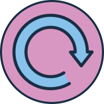

Selbsttest KI
Start

Frage 1:
Wie hilfreich finde ich KI-Assistenz in meinem Alltag? (z. B. Sprachassistenz,
personalisierte Playlists und Shopping-Vorschläge, Fahr- und Parkassistenz, …)
sehr hilfreich
hilfreich
wenig hilfreich
nicht hilfreich
Frage 2:
Wo steckt überall KI drin?
Suchmaschienen
Lebensmittelproduktion
Sprachassistenten
Fahrassistenten
Frage 3:
Bin ich schonmal in Kontakt mit Deepfake gekommen?
Ja
Nein
Frage 4:
Kann KI kreativ sein?
Ja
Nein
Frage 5:
Wie häufig nutze ich KI in meinem Alltag?
häufig
manchmal
selten
nie
Frage 6:
Wie und wo könnte der Einsatz von KI in Zukunft meine Arbeit als
Erzieherin / Erzieher erleichtern?
Frage 7:
In welchem Jahrzehnt wurde der erste Chat-Bot entwickelt?
1960er Jahre
1980er Jahre
2000er Jahre
2020er Jahre
Frage 8:
Wie wahrscheinlich ist es, dass KI zukunftsnah Entscheidungen
treffen kann, die ansonsten menschliche Eigenschaften wie z. B.
Empathie oder Moral erfordern?
sehr wahrscheinlich
wahrscheinlich
unwahrscheinlich
unmöglich
Frage 9:
Wie leicht fällt es mir, KI-generierte Inhalte zu erkennen?
sehr leicht
leicht
geht so
schwer
Frage 10:
Könnten KI-Chat-Bots das bayerische Abitur bestehen?
Ja
Nein
Frage 11:
Wo begegnet mir KI in meinem persönlichen Alltag? / Welche
KI-Technologien nutze ich aktiv und bewusst?
Frage 12:
Gibt es Entwicklungen im Bereich von KI-Technologien,
denen ich eher skeptisch gegenüberstehe?
Frage 13:
Was misst der Turing-Test?
Intelligenz
Sozialkompetenz
Leistung
ADHS
Frage 14:
Wie und wo könnte der Einsatz von KI im pädagogischen
Alltag problematisch sein?
Frage 15:
Was wünsche / erhoffe ich mir persönlich von zukünftigen
KI-Technologien?
Selbstcheck KI erfolgreich Abgeschlossen!
PDF mit Ergebnissen herunterladen:
Selbstcheck wiederholen

Impressum

Konzeption: BLM Stiftung Medienpädagogik Bayern und mecodia Software & Consulting und Bildungs-Agentur
Redaktion: Jutta Schirmacher, Lina Renken und Franziska Hein (BLM Stiftung Medienpädagogik Bayern)
Grafiken: Enrico Pallazzo - Gesellschaft für gute Unterhaltung GmbH
Grafiken: Enrico Pallazzo - Gesellschaft für gute Unterhaltung GmbH
Programmierung und grafische Gestaltung: Fish Blowing Bubbles GmbH
Das digitale Element „Selbstcheck KI“ ist Teil des Moduls „KI im pädagogischen Alltag“
des Medienführerscheins Bayern für die Fachakademien für Sozialpädagogik (FAKS).
Entwicklung und Gestaltung der Materialien gefördert durch die Bayerische Staatskanzlei.
München, August 2024
Copyright: BLM Stiftung Medienpädagogik Bayern 2024
Alle Rechte vorbehalten
Quellen
[1]
Deutsches Schulportal, "Abitur 2024 - Prüfungen, News und Notenschnitte", Zuletzt bearbeitet am 23.07.2024,
https://deutsches-schulportal.de/bildungswesen/abitur-pruefungen-news-notenschnitte/
[2]
News4Teachers, "Forscher registrieren rasante Entwicklung: ChatGPT besteht das bayerische Abitur - mit einer Zwei", Veröffentlicht am 25.11.2023,
https://www.news4teachers.de/2023/11/forscher-registrieren-rasante-entwicklung-chatgpt-besteht-das-bayerische-abitur-mit-einer-zwei/
[3]
Onlim, "Die Geschichte und Entwicklung von Chatbots - von Eliza bis ChatGPT", Veröffentlicht am 15.03.2022,
https://onlim.com/die-geschichte-und-entwicklung-von-chatbots/
[4]
Soxes, "Beispiele für künstliche Intelligenz", Zuletzt bearbeitet am 31.07.2024,
https://soxes.ch/kuenstliche-intelligenz-beispiele/
[5]
ZVKI (Zentrum für vertrauenswürdige Künstliche Intelligenz), "Kreativität", Zuletzt bearbeitet am 01.08.2024,
https://www.zvki.de/
[6]
ZVKI (Zentrum für vertrauenswürdige Künstliche Intelligenz), "Turing-Test, Glossar", Veröffentlicht am 26.04.2022,
https://www.zvki.de/en/ki-navigator/unsere-inhalte/glossar